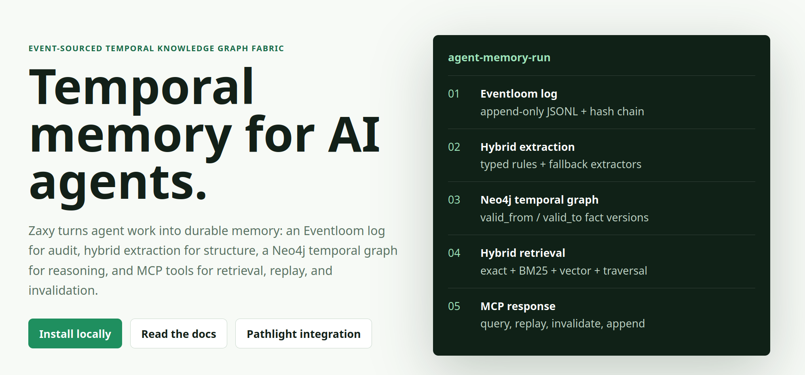

Relational
Entities and edges preserve actor, task, dependency, and provenance relationships.
Git for LLM memory
Zaxy turns agent work into durable memory: an Eventloom log for audit, hash-linked provenance for replay, a Neo4j temporal graph for reasoning, Memory Checkout for compact context, and MCP tools for model-facing retrieval, capture, and feedback.

Why Zaxy
Markdown files and chunk RAG flatten history. They can retrieve similar text, but they do not preserve causal chains, fact lifetimes, invalidations, or the evidence that led an agent to a decision. Zaxy keeps the raw event stream, seals it with hashes, and projects it into a graph built for multi-hop, temporal, and provenance-aware reasoning.
Entities and edges preserve actor, task, dependency, and provenance relationships.
Facts are versioned, so retrieval can ask what was true now or at a previous point.
The Eventloom log remains the immutable record behind every graph projection and checkout.
Architecture
Pathlight traces memory operations without becoming the storage layer. Neo4j answers graph questions. Eventloom remains the audit trail. The graph projects sealed Eventloom paths through NEXT_EVENT and PREVIOUS_EVENT edges. MCP gives agent frameworks a stable interface over stdio or SSE.
MCP tools
memory_capabilitiesTell the model what Zaxy can do, what capture paths are healthy, and when to checkout memory.
memory_checkoutReturn the current cited prompt state, active working set, provenance, Checkout diagnostics, and warnings.
memory_appendAppend typed events, extract graph facts, and trace the operation.
memory_queryFuse exact lookup, keyword search, vector similarity, and traversal.
memory_replayRebuild session history from Eventloom, optionally from a sequence number.
memory_invalidateClose graph fact validity windows without deleting historical evidence.
Models consume answerability, required_action,
current_citation_count, and feedback payloads directly.
A checkout without current citations or with warnings tells the model
to refresh memory or ask the user instead of guessing from stale context.
The canonical fixture lives at
docs/examples/memory-checkout-contract.json.
{
"quality": {
"answerability": "answer_from_memory",
"confidence": 0.75,
"required_action": null
},
"diagnostics": {
"current_citation_count": 1,
"warning_count": 0
},
"guidance": {
"feedback": {
"tool": "memory_feedback",
"payloads": [{"feedback": "used"}]
}
}
}Retrieval
Zaxy routes queries through exact entity lookup, Neo4j full-text search, vector similarity, graph traversal, and verbatim Eventloom retrieval. Memory Checkout turns those lanes into compact cited context so agents receive connected facts instead of raw transcript piles. Checkout diagnostics show source lane mix, citation coverage, excluded superseded context, and feedback guidance. Temporal filters let callers retrieve only facts valid at a point in time.
Deterministic capture
The Codex preset renders the official MCP install command, writes local session JSONL capture config, and supports a managed zaxy capture start watcher.
Stable hook sinks record lifecycle, command, file-edit, tool-call, and transcript observations when the client supports them.
Provider packet capture remains opt-in for diagnostics and high-fidelity audit because it can consume API quota.
Production posture
Docker/Kubernetes-style *_FILE config keeps production secrets out of plaintext env files.
SSE requests require bearer auth and are scoped by per-client session headers.
Production compose and certificate scripts support encrypted Bolt connections.
Benchmark evidence
The headline Zaxy run scores 0.950 mean, 0.950 Answer@5, 1.000 citation coverage, and 0.990 R@1/R@5/R@10 on a 100-question LongMemEval-compatible slice. A same-harness BM25 baseline reaches 0.840 R@5 on the same slice. MemPalace, Mem0, and Agent Memory numbers below are external disclosures; they are not same-harness results.
Archived 100-query LongMemEval-compatible run with cited memory output.
Same 100-query LongMemEval-compatible comparison run and scoring protocol.
Mean Zaxy score with OpenAI text-embedding-3-small on 850 events and 650 paired queries, a +0.480 mean delta versus vector and markdown+vector baselines.
Local rows are archived Zaxy harness results. Competitor rows are public disclosures with different harnesses or metrics.
| System | Metric | Reported result | Evidence type |
|---|---|---|---|
| Zaxy | LongMemEval-compatible R@5 | 0.990 | Same harnessArchived report |
| Zaxy | LongMemEval-compatible Answer@5 | 0.9500.880 in BM25 comparison | Same harnessArchived reports |
| BM25 baseline | LongMemEval-compatible R@5 | 0.840 | Same harnessArchived report |
| MemPalace | LongMemEval R@5 | 96.6% raw; 98.4% held-out hybrid | ExternalPublic disclosure |
| Agent Memory | LongMemEval-S R@5 | 95.2% | ExternalPublic disclosure |
| Mem0 | LOCOMO accuracy | +26% Accuracy over OpenAI Memory | ExternalDifferent metric |
Install
pip install zaxy-memory
./scripts/setup.sh
docker compose up -d
zaxy statuspip install -e ".[dev]"
zaxy serve
zaxy serve --transport sse --port 8080
scripts/release-check.sh --root .Documentation